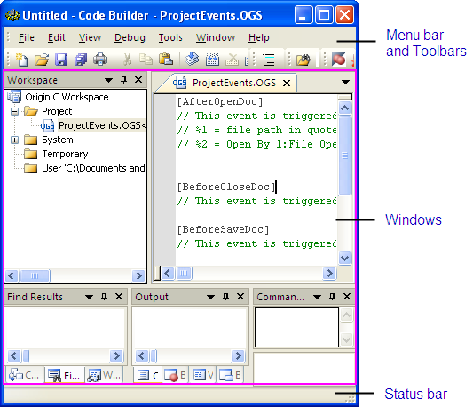

Code Builder
Der Code Builder stellt die Entwicklungsumgebung (IDE) mit integriertem
Origin
C dar. Er enthält Standardhilfsmittel zum Schreiben, Kompilieren und
Debuggen Ihrer Origin C-Programme bzw. LabTalk-Skripte. Um den Code Builder
zu öffnen, klicken Sie auf die Ansicht: Code Builder oder klicken
Sie auf die Schaltfläche  auf der Symbolleiste Standard oder
drücken Sie Alt+4. In diesem Fenster finden Sie alles, was Sie
benötigen, um Ihre Origin C-Programme bzw. LabTalk-Skripte uzu entwickeln:
auf der Symbolleiste Standard oder
drücken Sie Alt+4. In diesem Fenster finden Sie alles, was Sie
benötigen, um Ihre Origin C-Programme bzw. LabTalk-Skripte uzu entwickeln:
- 
- Das obere Bedienfeld ist die Oberfläche, in der der Code Builder
all seine Befehle oder Optionen abbildet.
- Weitere Informationen finden Sie unter Einführung in
Menüelemente und Symbolleisten.
- Das mittlere Bedienfeld ist der eigentliche Arbeitsbereich, in
dem Sie Ihre Origin C-Programme organisieren und entwickeln sowie Ihre
LabTalk-Skripte debuggen.
- Weitere Informationen finden Sie unter Origin C-Programme
organisieren und entwickeln.
- Zum Debuggen von LabTalk-Skripte lesen Sie bitte LabTalk-Skripte debuggen.
- Das untere Bedienfeld enthält Informationen Ihres Code Builders
wie z.B. zur Position des Cursors.
- Weitere Informationen finden Sie unter Informationen
der Statusleiste.